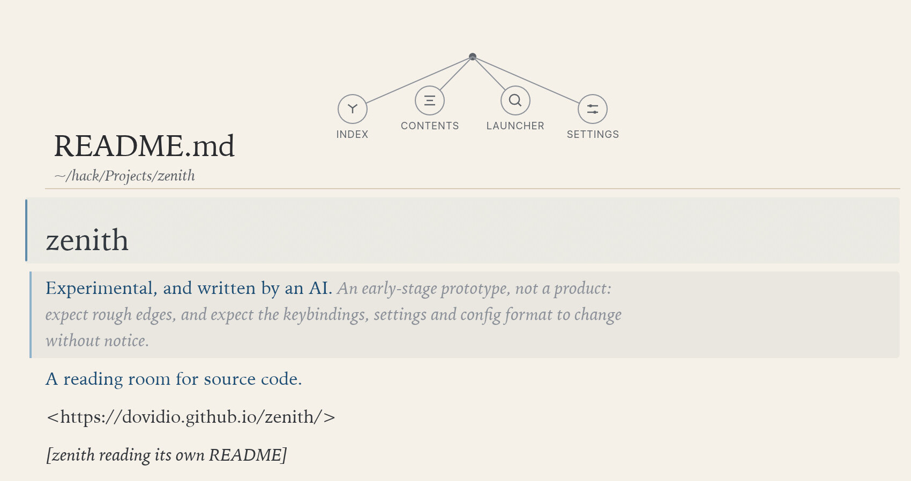

A code reader, not an editor.
For code you have to understand but didn't write.
This is the page's type, set in HTML. The actual app is below.
Six atmospheres
Six complete looks. Each has its own paper, ink and tones; the whole page changes, not just the code. 1–6 picks one.
Run it
A native app for macOS and Linux. It bundles nothing: fonts, icons and language servers come from your machine.
Rust 1.92 or newer. Language servers are found, never installed.
git clone https://github.com/dovidio/zenith
cd zenith
cargo run --release -- ~/code/some-projectThe room
Zenith is for the code you have to understand but didn't write: a review, an inherited service, a dependency you need to trust.
It isn't an editor with the editing removed. The page opens alone; the bloom above it holds the index, contents, launcher and settings, one at a time, gone when you're done.
Read-only isn't a setting here. It's the shape of the room. Markdown renders as a document; a fenced # stays code.

It does not change your code
Zenith reads files and never writes them. No save button, no lockfile, no cache in the repository. Your settings and reading positions live outside the project, in your config folder.
The only process it may start is a language server, for a folder you opened, to find where a symbol is defined. It never edits.
Read a codebase without the editor talking back.
Open a repository. Read it. Leave it exactly as you found it.